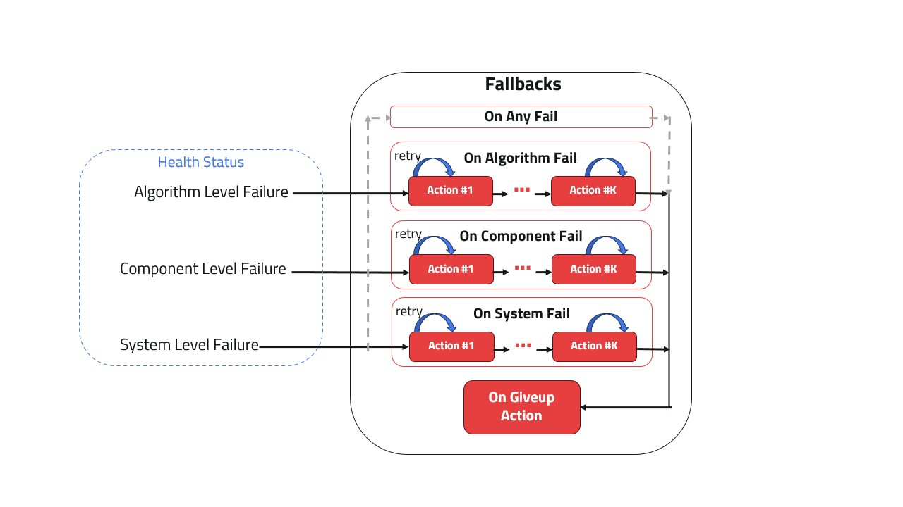

Fallbacks#
Components Fallbacks contain the set of Actions to be executed when a failure status is detected. Fallbacks are defines with an Action or a list of Actions to be executed in sequence. Each Action in the list is retried until max_retries is reached.
{kind=link}

Fallbacks and Health Status#
Fallbacks Categories:#
Each component has 3 built-in possible fallbacks categories along with the possibility to set a behavior for “any failure” and a “giveup” behavior that is executed when all failure actions are exhausted.
on_component_fail
on_algorithm_fail
on_system_fail
on_any_fail
on_giveup
The first three are designed to correspond to the three different Health Status a Component can take other than “Healthy” status. ‘on_any_fail’ is used to define a fallback policy regardless of the failure category. Finally, ‘on_give’ is the final Action the Component will execute when all the fallbacks and retries are exhausted.
Default behavior in a Component:#
The default behavior in a Component is for the component to broadcast the status on any detected failure. By default the component sets ‘on_any_fail’ Fallback to ‘Action(self.broadcast_status)’ with ‘max_retries=None’.
Action(s) set for ‘on_any_fail’ is executed for any failure for which no fallback action is defined.
Note
Each Component already owns its own ComponentFallback configured to the previous default behavior. The only thing required is to configure the Actions executed at each (or any) failure type.
Usage in a Component:#
from kompass.components.component import Component
from kompass.actions import Actions
my_component = Component(component_name='test_component')
# Set fallback for component failure to restart the component
my_component.on_component_fail(fallback=Actions.restart(component=my_component))
# Change fallback for any failure
my_component.on_fail(fallback=Action(my_component.restart))
# First broadcast status, if another failure happens -> restart
my_component.on_fail(fallback=[Action(my_component.broadcast_status), Action(my_component.restart)])